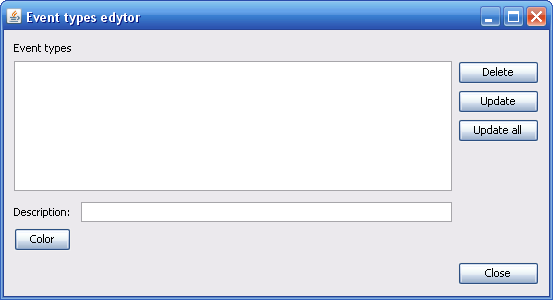

Polecenie dostępne z "Zdarzenia" -> "Edytor zdarzenia" wyświetla standardowe okno dialogowe pozwalające na wybór i edycję zdarzeń zawartych w projekcie, a także na aktualizację opisów i symboliki.
Okno zawiera pole wyboru dostępnych zdarzeń akustycznych, pole tekstowe umożliwiające edycję opisu typu zdarzenia, oraz przycisk wyboru koloru typu zdarzenia.
Przycisk "Aktualizuj" pozwala na zaktualizowanie koloru i opisu danego typu zdarzenia, przy czym aktualizacja dotyczy tylko typu zdarzenia, a nie dotyczy typów zdarzeń już utworzonych w projekcie.
Przycisk "Aktualizuj wszystko" działa jak przycisk "Aktualizuj" z tym że dodatkowo dokonuje zmian opisów i kolorów zdarzeń już utworzonych w projekcie.